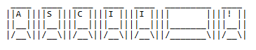

Es könnte doch soooooo einfach sein
Es fing alles ganz harmlos an: Ich wollte ein kleines Stück Code schreiben. So ein bisschen Pixel schubsen und eine neue Klasse für ein div-Element anlegen.
Wo zum Geier sind die Klammern geblieben? Auf der Tastatur sind die nicht mehr da. Futsch... einfach weg...
Ich weiß, daß die irgendwo zwischen 6 und ß sind mit Alt Gr und Shift, aber welche da jetzt wo liegt, weiß ich nicht auswendig.
Ich könnte schwören, daß die letztes Jahr noch da waren......
Ach ja, da war was. Da ist meine schöne Windows XP Wave Tastatur kaputt gegangen.
Nach 24 Jahren..... 😭
Beim Kauf der Neuen hab ich einfach nicht nachgeschaut ob die noch alle Klammern auf´m Zaun hat.
Ich hab das als selbstverständlich vorausgesetzt. Blöder Fehler. Aber egal, was nun?
Das arme, kleine Blondinenhirn kommt schwer ans Rattern.
Da war doch was? Damals bei den Königen der Andalen und der ersten Menschen......
⚡ falscher Film.... ⚡
Damals, in der Zeit als es noch Informatikunterricht gab obwohl keine Computer im Klassenzimmer standen...
Fährte ist gut... da hat uns mal einer was von Bits und Bytes und ASCII erzählt.

Ja. ASCII. Diese uralte Tabelle, in der jedes Zeichen seinen eigenen Zahlencode hat.
Eine Art Geheimsprache für Computer, lange bevor Emojis die Herrschaft über unsere Kommunikation übernahmen.
Wir fragen einfach die KI, die spuckt mir die ASCIIs für die Klammern gleich daneben aus und schon kann ich tippen:
"Alt-Taste plus 123 = '{'"
"Alt-Taste plus 125 = '}'"
Also sitze ich da an der Tastatur, und drücke Alt+123 und Alt+125, Zeichen für Zeichen.
Ich bin stolz wie Oskar. Ich fühle mich wie Indiana Jones auf der Suche nach den verlorenen Klammern.
Natürlich hat mein stiller Sparringspartner das alles ruhig registriert. Kein Lachen. Kein Kommentar.
Nur irgendwann, als ich fast fertig bin, ein pragmatisches: "Willst du, dass ich dir zeige, wie die virtuelle Tastatur funktioniert?"
Ähm. Ja. Vielleicht. Ein kleines bisschen. 😅
Turns out: In der Entwicklungsumgebung, in der ich gerade gearbeitet habe, gibt es eine superpraktische Funktion:
Eine virtuelle Tastatur, bei der man sich einfach alle Sonderzeichen anklicken kann, die man braucht.
Keine Alt-Codes, keine Fingerkrämpfe, keine Zeitreisen ins Jahr 1982 nötig.
Das hätte Mr. KI auch mal früher sagen können.
Aber man kann auch ASCII tippen... Gehen tut das...
Man kann sich natürlich auch nen Knopf an die Backe nähen und ein Klavier dran hängen.
Das geht auch...
Tja.
Aber mal ehrlich: ASCII vergessen? Niemals.
Man weiß ja nie, wann der nächste Klammern-Notstand kommt und man wieder tief in die Katakomben der Computergeschichte abtauchen muss.
Merke:
Wenn die Technik versagt, helfen Alt-Codes.
Wenn der Verstand versagt, hilft Kaffee.
Und wenn beides versagt, hilft noch mehr Kaffee! 😉
P.S.:
ASCII und ich, wir haben eine lange gemeinsame Geschichte.
Damals, als kleine Blondine, habe ich gerne den Informatiklehrer zur Weißglut gebracht.
Ein bisschen ctty nul hier, ein bisschen falsche AUTOEXEC.BAT dort, und schwupps: Bildschirm schwarz, Tastatur tot, System erledigt.
Und das natürlich erst beim nächsten Neustart, wenn ich nicht vor dem Gerät gesessen hab. Die Unschuld vom Lande.
Heute nenne ich es: frühe Talententwicklung. 😎
Bis zum nächsten Mal, eure Dumdidum.